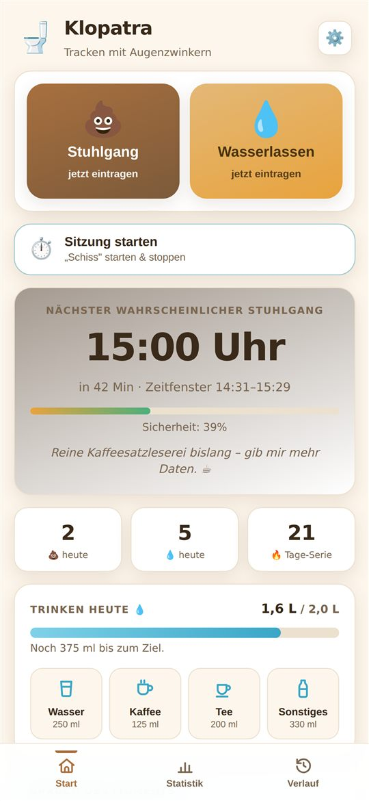
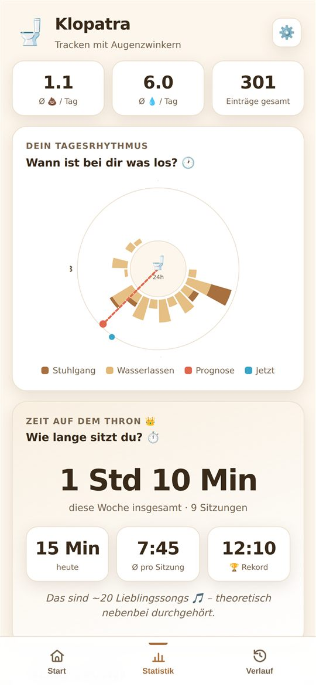
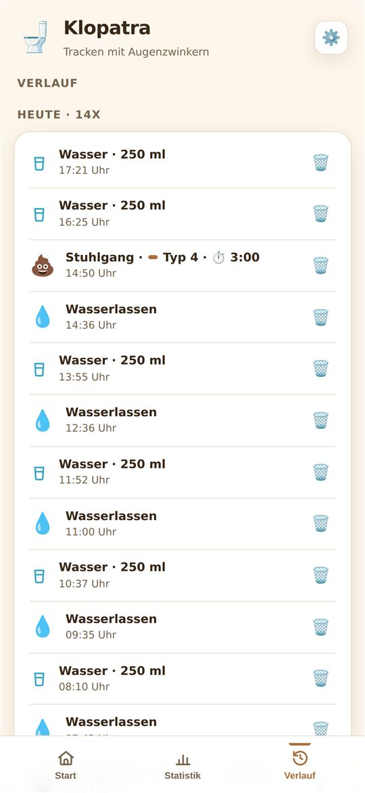

Klopatra
Herrsche über deinen Thron. 👑
Du wurdest zum Klo-Duell herausgefordert! 🥊
So nimmst du die Herausforderung an:
- Link kopieren (Button unten)
- Klopatra öffnen → Statistik → Mit Freunden vergleichen
- Link einfügen – fertig ist der Kopf-an-Kopf-Vergleich
Kopiert! Ab auf den Thron. 🚽
Die Toiletten-Tracking-App mit Augenzwinkern: Toilettengänge mit einem Tipp erfassen, dein Muster bildlich sehen und dir die nächste wahrscheinliche Sitzung vorhersagen lassen – mit einer ordentlichen Portion Humor.
Bald für iPhone und Android erhältlich.
Was Klopatra kann
Schnell-Tracking
Stuhlgang oder Wasserlassen – ein Tipp, fertig. Details wie Bristol-Typ und Notiz optional.
Gewohnheits-Prognose
Der Algorithmus lernt deine typischen Zeiten und sagt die nächste Sitzung samt Zeitfenster voraus.
Muster sehen
24-Stunden-Uhr, Wochen-Balken, Bristol-Verteilung und Trends im Wochenvergleich.
Zeit auf dem Thron
Sitzungen stoppen – mit Wochen-Summe, Rekord und lustigen Umrechnungen.
Trinken im Blick
Wasser, Kaffee, Tee mit einem Tipp erfassen und dein Tagesziel erreichen.
Regelmäßigkeits-Check
Ehrliche Hinweise zu Häufigkeit und Konsistenz – humorvoll verpackt, sachlich im Kern.
Ein Blick in die App



Was aufs Klo geht, bleibt auf dem Klo. 🔒
Kein Konto. Kein Server. Kein Tracking. Keine Werbung.
Alle Einträge bleiben ausschließlich auf deinem Gerät. Du kannst sie jederzeit exportieren oder löschen.
⚕️ Klopatra gibt Orientierung, keine Diagnose – kein Arztersatz. Bei anhaltenden Beschwerden, Blut im Stuhl oder starken Schmerzen bitte ärztlich abklären lassen.
Hilfe & Kontakt
Fragen, Feedback oder ein Problem mit der App? Schreib uns: shop@robtech-consult.de
Käufe wiederherstellen: in der App unter Einstellungen → Rechtliches → Käufe wiederherstellen.